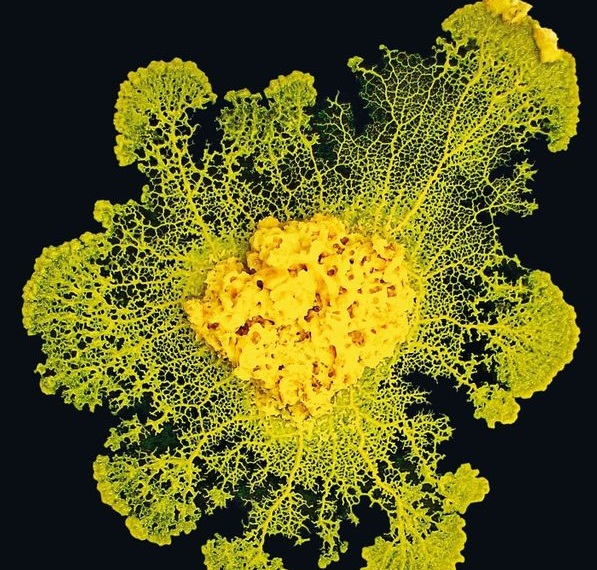

Rubrique scientifique
La vie unicellulaire prendra-t-elle le dessus ?
Le Physarum Polycephalum, aussi connu sous le nom de Blob, est un être vivant unicellulaire qui permet aux scientifiques des avancées dans les laboratoires. Il ne craint ni le feu, ni l’eau mais il est sensible à la lumière. Il est presque immortel. Dans la nature, il se nourrit de champignons, de levures et d’autres blobs. Il cicatrise et referme sa membrane en seulement 2 minutes. Sans cerveau ni jambes, il se déplace, grandit jusqu’à 10 cm² et résout des problèmes.
La scientifique Audrey Dussutour a prouvé par plusieurs expériences que selon d'où viennent les BLOBS, ils se comportent différemment. En effet, un blob australien se fait tuer par un blob américain et ignoré par un blob japonais, et 2 blobs australiens s'assemblent pour n'en former qu'un seul.
Le régime alimentaire est aussi assez spécifique, alors que les blobs du laboratoire, australiens de Mme Dussutour se nourrissaient de flocons d'avoine bio, les blob américains ont refusé de les manger pour opter pour des flocons d'avoine de supermarché, plus gras et calorique.
->Les blob suivraient-ils les clichés de la population ?
Mme Dussutour a aussi prouvé que le blob s'adapte et que 2 blobs peuvent se partager des informations et des capacités. Les blobs détestent le sel, et si au fur et à mesure qu'un blob est en contact avec celui-ci, il s'adapte et le supporte. Si ce blob qui s'est adapté au sel est en contact avec un blob non adapté, les 2 blobs seront adaptés au sel.
Le blob laisse derrière lui une trace de mucus pour savoir s'il est déjà passé par là. Cependant, il ne différencie pas le mucus des tubes blob et du sien, et se retrouve perdu si toute la surface sur laquelle il est posé est recouverte de mucus. C'est ce qu'a prouvé cette scientifique aussi.
Un autre scientifique de renom a aussi travaillé sur le blob et a reçu beaucoup de prix pour ses travaux : Toshiyuki Nakagaki.
Ce scientifique a prouvé "l'esprit de logique" d'un blob. En effet, il a réussi à faire trouver la sortie d'un labyrinthe d'un blob, ou encore de lui faire faire les routes ferroviaires du Japon.
Il a aussi réussi à prouver qu'un blob peut anticiper une action si elle se répète toujours à un intervalle de temps régulier.
Tandis que les scientifiques font des expériences complexes, nous en faisons des plus simples en classe, un miroir de celles à bord de l’ISS. Deux protocoles : exploitation et exploration, ont été mis en place pour observer le comportement des blobs en microgravité. L'intérêt des expériences faites par des élèves partout en France est d’avoir un grand nombre de résultats et d'élargir les connaissances de la population au sujet de ces êtres vivants incroyables.
Le protocole exploration s’agit de laisser un blob seul, dans une boîte de pétri, à découvrir son environnement. Le protocole exploitation s’agit également d’un blob dans une boîte de pétri, mais cette fois-ci il a le droit à 4 flocons d’avoine, sa nourriture préférée.
Nous avons pu voir, grâce aux résultats publiés par Audrey Dussutour, que la seule grande différence entre le développement des blobs sur l’ISS et sur Terre est que ceux dans la station spatiale ont évolué dans la troisième dimension, alors que sur Terre ils n'exploitent que la seconde.
Cet être mystérieux peut permettre de nombreuses avancées scientifiques, c’est pour cela qu’il nous fascine tant. En somme, le Blob est un être intriguant, sans cerveau, qui est doté d’une certaine capacité d’apprentissage.
Cet article a été rédigé par Clémentine Catalano, Elya Castaing et Abigael Walmsley